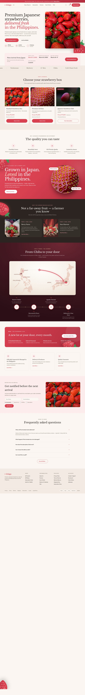
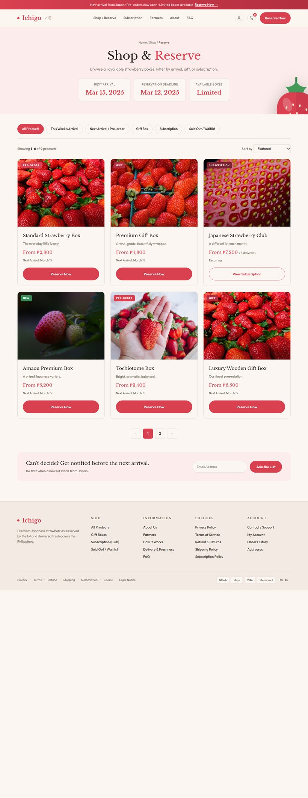
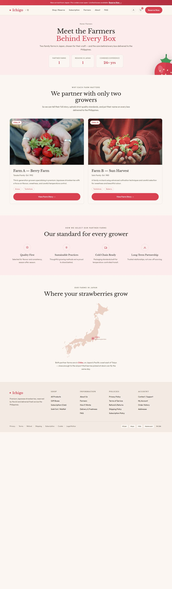
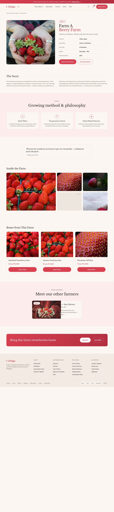
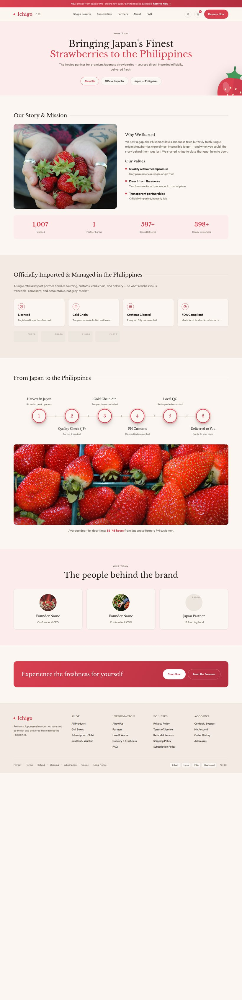
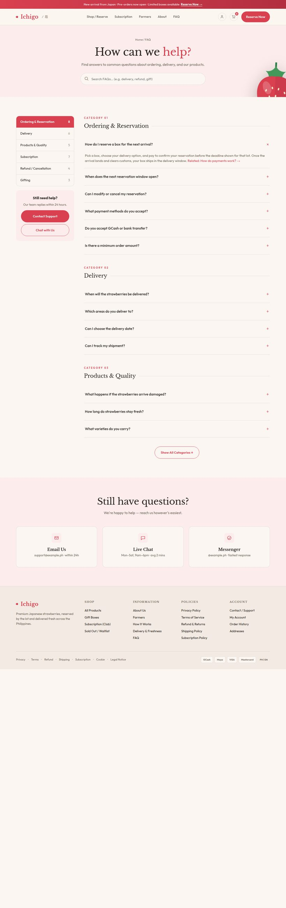
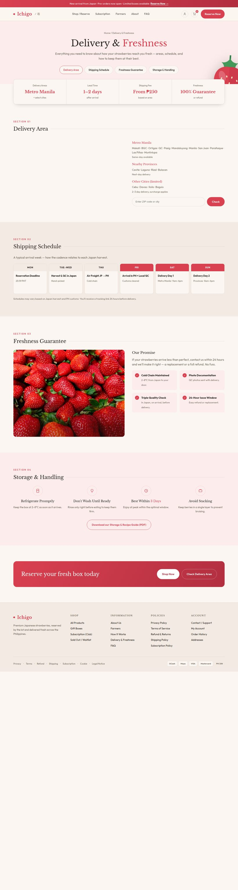
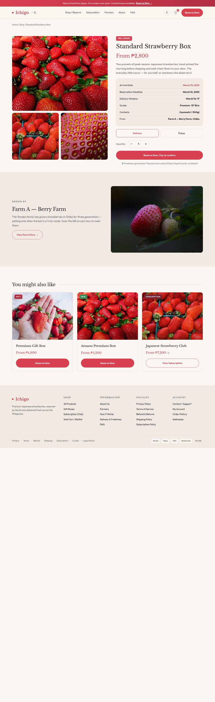
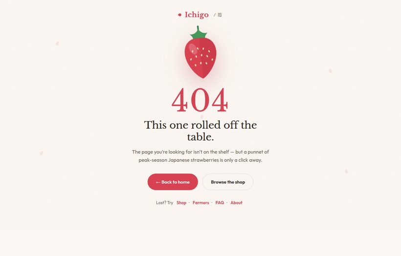

Premium Japanese strawberries — pre-order & 頒布会 subscription — delivered fresh to the Philippines. A page-by-page guide to the storefront and what every section does.
A custom storefront in the brand's image-led, "ちょこっと贅沢 (a little luxury)" style — simple, professional and approachable. Palette: Ripe Red, warm off-white and greige; type: Libre Baskerville + Outfit. The site centres on lot-based pre-orders, the monthly 頒布会 club, and farmer storytelling with QR traceability.
Note: all photography shown is temporary placeholder imagery — final shots and the real farm details (names, varieties, Chiba farms) will replace them.
The storefront's front door — sets the premium-but-approachable tone and funnels visitors to reserve the next arrival.
Rotating notice for the current drop ('New arrival · Pre-orders open · Limited boxes').
Logo, primary nav (Shop/Reserve, Subscription, Farmers, How It Works, FAQ), account + cart, and a 'Reserve Now' button.
Headline 'Premium Japanese strawberries, delivered fresh in the Philippines', lead copy, two CTAs (Reserve Next Arrival / Join Waitlist), trust badges, and the hero photo.
At-a-glance lot info: arrival date, reservation deadline, delivery window, boxes available, with a Reserve CTA.
Scrolling keyword ribbon (varieties, Chiba, cold-chain, 頒布会, single-origin) for texture and brand cues.
Three featured products — Standard Box, Premium Gift Box, Japanese Strawberry Club — as image cards.
Why Japanese strawberries are different — short value points (carefully grown, peak-ripeness, cold-chain).
Bold red/white 'Grown in Japan. Loved in the Philippines.' moment with a 3D strawberry.
'Not a far-away fruit — a farmer you know.' Two farmer cards linking to their stories.
Animated Chiba → your-door map (truck → plane → warehouse → van) plus the step timeline: Reserve → Harvested & Flown → Quality Checked → Delivered.
Promo for the monthly subscription club.
Delivery, freshness and quality reassurances.
Email capture for arrivals & restocks.
Common questions, then the full footer (shop, info, policies, account).

The catalogue — browse and reserve from the current and upcoming lots.
'Shop & Reserve' title, quick filter tabs (All / This Week / Pre-order / Gift / Subscription / Sold-Out), and the arrival/deadline summary.
Nine product cards (boxes, gift sets, subscription, limited lots) with status tags (Pre-order / Gift / New / Sold Out), price and a Reserve action. Includes working filters + pagination.
Back-in-stock email capture and the site footer.

Builds trust — the people and places behind every box (the 親近感 pillar).
'Meet the Farmers Behind Every Box' with headline figures (partner farms, region, combined experience).
Why we work with only two farms — a card per farm (story snippet, variety tags, link to the farm page).
The criteria every partner farm must meet (quality, sustainable practice, cold-chain ready).
A real map of Japan highlighting Chiba, where the farms are, with a short note.
Reserve prompt and footer.

A deep-dive on a single farm — story, method, and its boxes.
Farm name, location (Chiba), and a quick facts table.
The grower's background and philosophy.
How the berries are grown — the craft points.
A photo gallery of field, harvest and berries.
Products that come from this grower, plus a cross-link to the other farm.

The company story and the import/logistics credibility.
'Bringing Japan's Finest Strawberries to the Philippines' with section tabs.
Why the business exists, values, and headline stats.
Credential cards (licensed importer, cold-chain, customs, food-safety).
The 6-step journey as a timeline graph: Harvest → Quality Check → Cold-Chain Air → PH Customs → Local QC → Delivered (≈36–48h door-to-door).
Founder/team introductions.
Reserve prompt and footer.

Self-service answers to reduce pre-purchase friction.
'How can we help?' with a search field.
Sidebar categories (Ordering & Reservation, Delivery, Products & Quality) with expandable Q&A accordions.
Contact options (email, live chat, Messenger) and footer.

Sets delivery expectations and reassures on freshness — key for a pre-paid, perishable product.
'Delivery & Freshness' with headline figures (areas, lead time, fee, guarantee).
Serviced regions with a coverage map and a postcode/area checker.
A weekly timeline from reservation deadline to delivery.
The promise (and what happens if a box arrives damaged).
How to keep the berries at their best, plus a downloadable guide.
Reserve prompt and footer.

The conversion page — everything needed to reserve one box.
Main image + thumbnails, price, specs table, quantity, and the Reserve/Pre-order action.
The farm behind this box, with a link to its story and a QR-traceability nod.
Related products to raise basket size.
Site footer.

A friendly, on-brand dead-end that routes lost visitors back to shopping.
A floating strawberry, '404 — this one rolled off the table', and buttons back to Home / Shop plus quick links.
